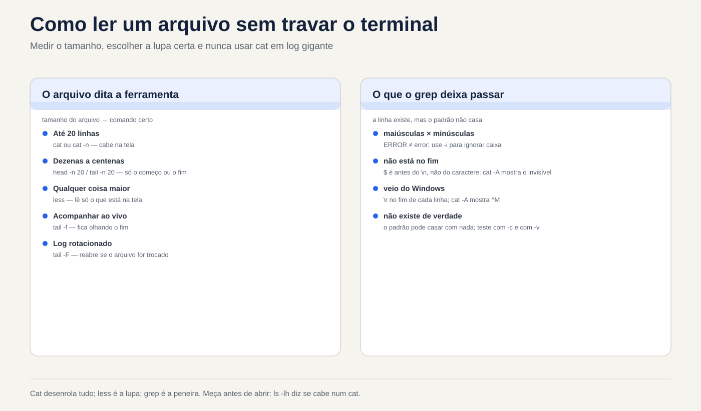
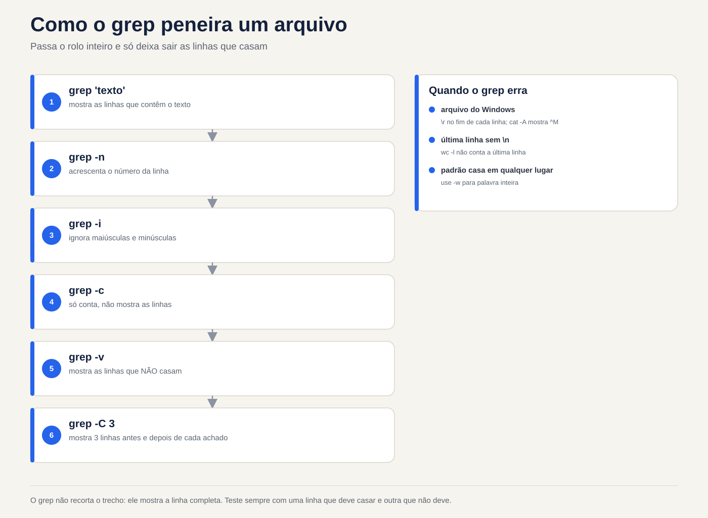
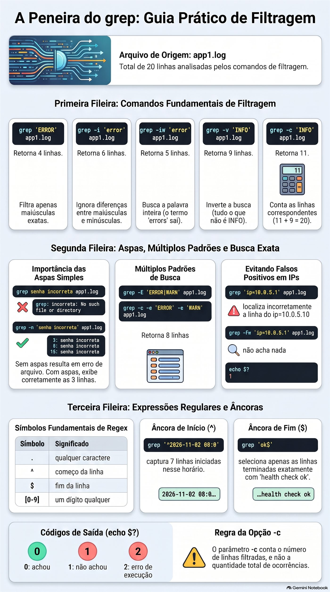

Aula 1.5 · Ler e procurar texto
Você aprende a ler qualquer arquivo de texto do servidor sem travar o terminal e sem risco de alterá-lo, e a achar em segundos a linha que importa. Pode ser um log de 3 GB, uma configuração de 900 linhas ou uma pasta inteira de arquivos: o método é o mesmo. Medir antes de abrir, ir direto ao ponto e deixar o grep peneirar.
| Ficha | Aula 1.5 |
|---|---|
| Módulo | M1 · Linha de comando, aula 5 de 10 |
| Quando | Semana 2 |
| Ao final você consegue | Ler um arquivo de qualquer tamanho sem travar o terminal; ir direto ao fim de um log e acompanhá-lo ao vivo, inclusive depois da rotação; contar linhas e ocorrências; achar uma linha num arquivo ou numa pasta inteira; mostrar só as linhas ativas de uma configuração; descobrir por que o grep não acha uma linha que você está vendo na tela |
| Itens de prova | LE 013.2 · LPIC-1 103.2 e 103.7 (início) · RHCSA: usar grep e expressões regulares para analisar texto |
| Pré-requisitos | Aula 1.4, com o ~/lab13 ainda nas VMs |
| Tempo | Cerca de 2h30 |
| Snapshots | m1a5-inicio e m1a5-fim nas duas VMs |
1 · Aquecimento
Três perguntas, de cabeça, antes de ler qualquer coisa. Escreva as respostas; o Gabarito confere no fim.
- Você apagou um log de 5 GB com
rm, e odfnão baixou. Qual comando mostra quem ainda segura o arquivo? - Você roda
mv app.log app.log.1no mesmo sistema de arquivos. O que acontece com o inode? - Em
~/lab13/logs, o que o shell entrega aogrepquando você digitagrep erro *.log? O.escondido.logentra?
2 · Por que importa
Segunda, 9h. O cliente liga: o sistema caiu de madrugada. Você entra por SSH e digita cat /var/log/app/app.log. O arquivo tem 3 GB. O terminal rola por minutos, o Ctrl+C demora a responder, e o que aconteceu às 3h passa voando. Você tenta abrir no editor, e o servidor, que já estava sem memória, começa a engasgar.
O admin experiente faz outra coisa. Primeiro mede: ls -lh mostra 3 GB, então nada de cat. Vai direto ao fim com tail -n 100, porque o problema é recente. Peneira com grep -n -i 'error' e o horário da queda. Abre cinco linhas em volta do achado com grep -C 5. Pede para o cliente testar e acompanha ao vivo com tail -F. Em dois minutos ele tem a linha exata para colar no chamado, e não mudou um byte de nada.
O segundo caso: você muda PermitRootLogin no no sshd_config, reinicia o serviço, e o root continua entrando. Um sudo grep -rn PermitRootLogin /etc/ssh/ mostra, em três segundos, um arquivo dentro de sshd_config.d/ que é lido antes e vale mais. Sem o grep, isso leva uma tarde.
O terceiro é o mais irritante: o grep diz que a linha não existe, mas ela está ali, na sua tela. O arquivo veio do Windows. Esta aula mostra por que isso acontece e como ver o invisível.
3 · Modelo mental
Um arquivo de texto é um rolo de papel com linhas. Cada comando desta aula é um jeito diferente de olhar o rolo, e nenhum deles escreve nele.
catdesenrola o rolo inteiro de uma vez na sua frente. Ótimo para 20 linhas; um desastre para 2 milhões.lessé uma lupa: anda para frente e para trás, pula para o fim, procura uma palavra. Só lê o pedaço que está na tela, por isso abre 3 GB na hora.headmostra o começo do rolo;tailmostra o fim. Com-f, otailfica olhando o fim enquanto o rolo cresce.wcmede o rolo: linhas, palavras e bytes.grepé uma peneira: passa o rolo inteiro e só deixa sair as linhas que têm o que você pediu.
app1.log (20 linhas)
┌───────────────────────────────────────────┐
│ 1 08:00:01 INFO web: servidor iniciado │ ◄── head -n 3
│ 2 08:00:02 INFO db: conexão aberta │
│ 3 08:03:15 WARN web: resposta lenta │
│ … │
│ 5 08:06:02 ERROR auth: senha incorreta │ ◄── grep ERROR deixa passar
│ … │
│ 18 08:45:00 INFO cron: limpeza de /tmp │ ◄── tail -n 3
│ 19 08:50:27 INFO auth: login ok │
│ 20 09:00:00 INFO web: health check ok │
└───────────────────────────────────────────┘
less: a lupa que anda pelo rolo inteiro
wc -l: 20A primeira ideia: tudo é linha. Para essas ferramentas, uma linha termina num caractere invisível, o fim de linha, que se escreve \n. Quem não enxerga esse caractere cai nas duas armadilhas desta aula. Um arquivo salvo no Windows termina cada linha com \r\n, e aquele \r invisível faz o grep errar. E uma última linha sem \n não entra na conta do wc -l.
A segunda ideia vem da Aula 1.4: o tail -f segue o apartamento, não o nome. Ele abre o arquivo e fica olhando aquele inode. Quando o log é rotacionado com um mv, o nome passa a apontar para um arquivo novo, mas o tail -f continua no antigo, agora parado.
antes: app.log ────► inode 5001 ◄── tail -f olhando aqui
mv app.log app.log.1 (a rotação)
depois: app.log.1 ──► inode 5001 ◄── tail -f continua aqui, e nada mais chega
app.log ────► inode 5002 ◄── o programa escreve aquiA correção é uma letra: tail -F segue o nome e reabre o arquivo quando ele é trocado. A Quebra B faz você ver isso acontecer.
Ponte Windows. No Windows, você abre o Visualizador de Eventos e filtra com o mouse. No Linux, o log é um arquivo de texto, ou o journal, que tem aula própria, e estes seis comandos são o seu filtro. A diferença que mais engana quem vem do PowerShell: o Select-String ignora maiúsculas por padrão, e o grep não. Para o grep, ERROR e error são textos diferentes até você pedir -i.
4 · Conceito em camadas
Essencial
| Comando | O que faz | Quando usar |
|---|---|---|
cat arquivo | Mostra o arquivo inteiro | Arquivo que cabe numa tela |
cat -n arquivo | Mostra com o número de cada linha | Para dizer "linha 37" a alguém |
cat -A arquivo | Mostra os invisíveis: $ no fim de linha, ^I no tab, ^M no \r do Windows | Quando o texto parece certo e não funciona |
less arquivo | Abre na lupa | Qualquer coisa maior que uma tela |
head -n 20 arquivo | As primeiras 20 linhas | Cabeçalho, começo de um CSV |
tail -n 20 arquivo | As últimas 20 linhas | O que aconteceu por último num log |
tail -f arquivo | Mostra o fim e espera linhas novas | Acompanhar ao vivo |
tail -F arquivo | Igual, mas reabre o arquivo se ele for trocado | Acompanhar um log que passa pelo logrotate |
wc -l arquivo | Conta linhas | "Quantas tentativas de login?" |
grep 'texto' arquivo | Mostra as linhas que contêm o texto | Achar a linha que importa |
Sem -n, o head e o tail mostram 10 linhas. Isso cai na prova.
As opções do grep que você usa toda semana:
| Opção | Efeito | Exemplo |
|---|---|---|
-i | Ignora maiúsculas e minúsculas | grep -i 'error' app1.log |
-n | Mostra o número da linha | grep -n 'ERROR' app1.log |
-c | Conta as linhas que batem, em vez de mostrá-las | grep -c 'WARN' app1.log |
-v | Inverte: mostra as linhas que não batem | grep -v 'INFO' app1.log |
-w | Só a palavra inteira: error não pega errors | grep -iw 'error' app1.log |
-e | Mais de um padrão no mesmo comando | grep -e 'ERROR' -e 'WARN' app1.log |
-E | Forma estendida, com a barra vertical como "ou" | No Passo 7 |
-F | Texto literal: o ponto vale só ponto | grep -F '10.0.5.1' app1.log |
-r | Procura em todos os arquivos de uma pasta | sudo grep -r 'Port' /etc/ssh/ |
-l | Mostra só o nome dos arquivos que têm o texto | grep -rl 'senha' ~/lab13 |
-C 3 | Mostra 3 linhas antes e 3 depois de cada achado | grep -C 3 'timeout' app1.log |
-q | Não mostra nada; só diz, pelo código de saída, se achou | grep -q 'ERROR' app1.log; echo $? |
As teclas do less:
| Tecla | O que faz |
|---|---|
Espaço / b | Desce / sobe uma tela |
g / G | Vai para a primeira / a última linha |
/texto | Procura para baixo |
?texto | Procura para cima |
n / N | Próximo / anterior achado |
&texto | Mostra só as linhas com o texto; & e Enter desfaz |
F | Modo ao vivo, como o tail -f; Ctrl+C sai dele |
-N | Liga e desliga o número das linhas |
-S | Liga e desliga a quebra das linhas longas |
q | Sai |
h | Ajuda com todas as teclas |
Ponte Windows
| Linux | cmd | PowerShell |
|---|---|---|
cat arquivo | type arquivo | Get-Content arquivo |
less arquivo | more arquivo | Get-Content arquivo mais Out-Host -Paging |
head -n 5 arquivo | Não tem | Get-Content arquivo -TotalCount 5 |
tail -n 5 arquivo | Não tem | Get-Content arquivo -Tail 5 |
tail -f arquivo | Não tem | Get-Content arquivo -Tail 10 -Wait |
wc -l arquivo | find /c /v "" arquivo | (Get-Content arquivo).Count |
grep 'texto' arquivo | findstr "texto" arquivo | Select-String 'texto' arquivo |
grep -i | findstr /i | Já é o padrão do Select-String |
grep -v | findstr /v | Select-String -NotMatch |
grep -r | findstr /s | Get-ChildItem -Recurse mais Select-String |
Aprofundamento
Por que o less abre 3 GB na hora e o editor não. O less lê só o pedaço que vai mostrar. O editor carrega o arquivo inteiro na memória. Num servidor apertado, abrir um log grande no vi piora o problema. E abrir um arquivo de produção num editor só para ler é pedir para salvar uma mudança sem querer. Para ler, less. Editor é para editar.
Atalhos de abertura do less. less +G arquivo já abre no fim. less +F arquivo já abre no modo ao vivo: Ctrl+C para de seguir e deixa você procurar para trás, e F volta a seguir. É o tail -f com lupa.
Logs antigos e comprimidos. O logrotate guarda os logs antigos com outro nome e, às vezes, comprimidos em .gz. Para eles existem zcat, zless e zgrep, que funcionam como cat, less e grep, mas abrem o .gz sem você descomprimir nada. Na Rocky e na Debian, o próprio less também abre .gz.
tail -f contra tail -F. O -f segue o arquivo que abriu, ou seja, o inode. O -F segue o nome: se o arquivo for trocado, ele avisa e reabre. O logrotate tem dois jeitos de rotacionar. No create, o padrão, ele faz um mv e cria um arquivo novo: o -f fica parado no antigo. No copytruncate, ele copia e esvazia o original: o -f continua funcionando, e avisa file truncated.
Expressão regular, só o começo. O texto que você dá ao grep não é um texto puro: é uma expressão regular. Quatro símbolos já mudam o resultado:
| Símbolo | Significa | Exemplo |
|---|---|---|
. | Qualquer caractere | 10.0.5.1 também pega 10203541 |
^ | Começo da linha | ^# pega as linhas que começam com # |
$ | Fim da linha | ok$ pega as linhas que terminam em ok |
[0-9] | Um dígito qualquer | erro [0-9] pega erro 5 e erro 9 |
No grep, o * significa "zero ou mais do caractere anterior", e não "qualquer coisa" como no shell. O resto das expressões regulares tem aula própria, mais adiante no curso.
Sempre aspas simples no padrão. Sem aspas, o shell mexe no padrão antes de o grep ver: o espaço separa argumentos, e o * e o [0-9] podem virar nomes de arquivo. Com aspas simples, o grep recebe exatamente o que você digitou.
O código de saída. O grep termina com 0 quando acha, 1 quando não acha e 2 quando dá erro, como num arquivo inexistente. Scripts usam isso com grep -q. Você vê o código com echo $? logo depois do comando.
O -c conta linhas, não ocorrências. Uma linha com três ERROR conta 1. Para contar ocorrências existe o grep -o, que mostra cada achado numa linha, junto com o wc -l. A barra que liga os dois é assunto da Aula 1.6.
Linha não é evento. Um erro de Java pode ocupar 40 linhas de stack trace. O wc -l e o grep -c contam linhas. Antes de dizer ao cliente "foram 40 erros", olhe com -C se não é um erro só.
O que cai na prova
- LE: para que servem
cat,less,head,tail,wcegrep, e o padrão de 10 linhas doheade dotail. Perguntas curtas, em inglês, do tipo "which command shows the last lines of a file". - LPIC-1 103.2: as opções de
headetail(-n,-f), dewc(-l,-w,-c) e ocat -n. Também os irmãos para comprimidos:zcat,bzcatexzcat. Onlaparece como alternativa aocat -n; por padrão, ele não numera linhas em branco. - LPIC-1 103.7:
grepcom-i,-v,-c,-n,-l,-r,-Ee-F;egrepefgrepcomo nomes antigos degrep -Eegrep -F; e o básico de expressão regular. - RHCSA: a tarefa vem como problema: achar todas as linhas de um arquivo que contêm algo e guardar o resultado num arquivo. A parte de guardar é a Aula 1.6. O exame é corrigido por script: uma linha a mais ou a menos e a tarefa vale zero. Confira a contagem com
grep -cantes de entregar.
5 · Rocky × Debian
| Ponto | rocky-lab (Rocky 9) | debian-lab (Debian 13) |
|---|---|---|
| Log geral do sistema | /var/log/messages, escrito pelo rsyslog | Não existe por padrão: desde o Debian 12 o rsyslog não vem instalado, e os logs ficam só no journal, lido com journalctl |
Log de login e de sudo | /var/log/secure | Também só no journal |
| Quem pode ler | Os dois arquivos são só do root: use sudo | O journal completo exige o grupo adm ou systemd-journal, ou sudo |
| Logs de pacote | /var/log/dnf.log | /var/log/dpkg.log e /var/log/apt/history.log |
| Nome dos logs antigos | messages-20261101: com a data e sem compressão | dpkg.log.1, dpkg.log.2.gz: numerados e comprimidos a partir do segundo |
sshd_config | Permissão 600: só o root lê, então sudo grep | Permissão 644: qualquer um lê |
Versão do grep | 3.6: o egrep funciona calado | 3.11: o egrep funciona, mas avisa que está obsoleto |
Cor no grep | Alias grep --color=auto em /etc/profile.d/ | Alias no ~/.bashrc do usuário |
Por isso o laboratório usa arquivos que você mesmo cria, iguais nas duas VMs. Os logs de verdade de cada distribuição aparecem nos Bônus e na missão da vida real.
6 · Lab guiado
Tudo acontece em ~/lab13/logs, nas duas VMs. Os arquivos que a Aula 1.3 criou ali estão vazios; hoje eles ganham conteúdo. Faça cada passo na rocky-lab e repita na debian-lab.




Passo 1 · Preparar o laboratório
No nó Proxmox, a partir do estado m1a4-fim:
qm snapshot 201 m1a5-inicio
qm snapshot 202 m1a5-inicioEm cada VM, comece olhando o que já existe:
cd ~/lab13/logs
ls -la
wc -l *.logAlgo como:
0 app10.log
0 app1.log
0 app2.log
0 erro.log
0 totalTudo zero: o touch cria arquivo vazio. E o .escondido.log não aparece, porque o * não pega nome que começa com ponto. Se sobraram os nomes estranhos da Aula 1.3, tire-os agora com rm -fv -- -l 'relatorio final.txt'.
Agora o app1.log ganha 20 linhas de um log realista, e o grande.log ganha 200 mil:
cat > app1.log <<'EOF'
2026-11-02 08:00:01 INFO web: servidor iniciado na porta 8080
2026-11-02 08:00:02 INFO db: conexão aberta com pg01
2026-11-02 08:03:15 WARN web: resposta lenta em /relatorios (2,8 s)
2026-11-02 08:05:40 INFO auth: login ok usuario=ana ip=10.0.5.21
2026-11-02 08:06:02 ERROR auth: senha incorreta usuario=root ip=203.0.113.50
2026-11-02 08:06:05 ERROR auth: senha incorreta usuario=root ip=203.0.113.50
2026-11-02 08:06:09 ERROR auth: senha incorreta usuario=admin ip=203.0.113.50
2026-11-02 08:10:00 INFO cron: backup diário iniciado
2026-11-02 08:12:31 error db: timeout ao consultar pedidos (30 s)
2026-11-02 08:12:32 WARN web: erro 502 devolvido ao cliente
2026-11-02 08:15:00 INFO cron: backup diário concluído
2026-11-02 08:20:44 INFO auth: login ok usuario=bruno ip=10.0.5.30
2026-11-02 08:21:10 ERROR disk: /var com 95% de uso
2026-11-02 08:25:00 INFO web: deploy v2.4.1 aplicado
2026-11-02 08:30:12 WARN db: réplica pg02 atrasada 40 s
2026-11-02 08:31:00 INFO auth: logout usuario=ana
2026-11-02 08:40:03 WARN web: 3 errors no último minuto
2026-11-02 08:45:00 INFO cron: limpeza de /tmp concluída
2026-11-02 08:50:27 INFO auth: login ok usuario=rodrigo ip=10.0.5.10
2026-11-02 09:00:00 INFO web: health check ok
EOF
printf 'linha %s\n' $(seq 1 200000) > grande.log
ls -lh app1.log grande.logO cat > arquivo <<'EOF' grava tudo o que vem até a linha EOF. Por enquanto, use como receita; a Aula 1.6 explica cada pedaço. O printf repete o modelo linha N para cada número que o seq gera. O grande.log deve ficar com algo como 2,4M.
O app1.log foi montado de propósito: tem ERROR em maiúsculas, um error em minúsculas, um errors dentro de um aviso e dois IPs parecidos. Cada um desses detalhes vira uma armadilha nos próximos passos.
Passo 2 · cat: ver tudo e ver o invisível
cat app1.log
cat -n app1.log
cat -A app1.logO -n numera as linhas: 20. O -A põe um $ no fim de cada linha. É o \n que você não via. Guarde essa imagem: na Quebra A, um arquivo vindo do Windows mostra ^M$ no lugar do $.
Agora faça o erro uma vez, de propósito:
cat grande.logSão 200 mil linhas passando pela tela. Aperte Ctrl+C. Agora imagine 3 GB num SSH lento, de madrugada.
Decida 1 · O log de 2 GB. Cenário: o cliente diz que a aplicação deu erro agora há pouco. O /var/log/app/app.log tem 2 GB. Qual é o seu primeiro comando para ver o erro?
- A)
cat /var/log/app/app.log - B)
vi /var/log/app/app.log - C)
tail -n 100 /var/log/app/app.log - D)
head -n 100 /var/log/app/app.log
Escolha a letra antes de olhar a tabela.
| Se você marcou | Resultado | Por quê |
|---|---|---|
| A | ❌ Errada | São minutos de texto rolando, e o erro de agora há pouco passa voando no fim. |
| B | ❌ Errada | O editor carrega os 2 GB na memória de um servidor que já tem problema, e uma tecla errada salva uma mudança. |
| C | ✅ Certa | O que é recente está no fim. Cem linhas aparecem na hora, e você decide o próximo passo. |
| D | ❌ Errada | O começo do arquivo são dias ou semanas atrás. |
Para fixar: problema recente mora no fim do arquivo. Meça com ls -lh e depois use tail ou less +G.
Passo 3 · less: a lupa
less grande.logDentro do less, faça nesta ordem:
G: vai para a última linha,linha 200000. Foi instantâneo.g: volta para a primeira./linha 123456e Enter: pula para a linha procurada e a destaca.n: procura a próxima. OlessrespondePattern not found, porque só existe uma.-Ne Enter: liga os números de linha. Repita para desligar.q: sai.
Agora o filtro, que pouca gente conhece:
less app1.logDigite &ERROR e Enter. Ficam só as 4 linhas com ERROR. Digite & e Enter para ver tudo de novo, e q para sair. Por fim, less +G app1.log abre já no fim.
Decida 2 · Só conferir uma configuração. Cenário: num servidor de cliente, você quer apenas conferir o valor de PermitRootLogin no /etc/ssh/sshd_config. Como abre o arquivo?
- A)
sudo vi /etc/ssh/sshd_confige sai com:q - B)
sudo less /etc/ssh/sshd_confige procura com/PermitRootLogin - C)
sudo nano /etc/ssh/sshd_config - D)
sudo cat /etc/ssh/sshd_confige procura com os olhos
Escolha a letra antes de olhar a tabela.
| Se você marcou | Resultado | Por quê |
|---|---|---|
| A | ❌ Errada | Funciona, mas é um editor aberto como root no arquivo que controla o acesso ao servidor. Um :wq por hábito, ou um dd sem querer, muda a produção. |
| B | ✅ Certa | O less não sabe gravar. Você procura com / e sai com q, sem risco nenhum. |
| C | ❌ Errada | O mesmo risco da A: um Ctrl+O salva. |
| D | ❌ Incompleta | Não estraga nada, mas o arquivo tem mais de cem linhas, e procurar com os olhos é lento e falha. |
Para fixar: para ler, use uma ferramenta que não sabe escrever. E, quando você já sabe o que procura, sudo grep -n 'PermitRootLogin' /etc/ssh/sshd_config é ainda mais rápido. O Passo 8 volta a esse arquivo.
Passo 4 · head e tail: as pontas do rolo
head app1.log
head -n 3 app1.log
tail -n 3 app1.log
tail -n +18 app1.log
head -n 7 app1.log | tail -n 3O primeiro mostra 10 linhas, o padrão. O tail -n +18 quer dizer "da linha 18 até o fim": aqui, as mesmas três últimas. O último comando mostra só as linhas 5 a 7, as três senhas incorretas. A barra | entrega a saída do head ao tail; ela é o centro da Aula 1.6.
Ao vivo. Abra uma segunda sessão SSH na mesma VM. Na sessão 1:
touch ~/lab13/logs/ao-vivo.log
tail -f ~/lab13/logs/ao-vivo.logNa sessão 2, rode duas ou três vezes:
echo "$(date '+%F %T') INFO web: teste ao vivo" >> ~/lab13/logs/ao-vivo.logCada linha aparece na sessão 1 no mesmo instante. O >> acrescenta no fim do arquivo, sem apagar o que existe; também é assunto da 1.6. Aperte Ctrl+C na sessão 1 para parar.
Decida 3 · De olho no deploy. Cenário: o desenvolvedor vai publicar a versão nova daqui a cinco minutos. A aplicação reinicia e recria o arquivo de log ao subir. Ele pede que você fique de olho no log enquanto testa. O que você roda?
- A)
tail -n 50 app.log, repetido a cada minuto - B)
tail -F app.log - C)
tail -f app.log - D)
less app.log
Escolha a letra antes de olhar a tabela.
| Se você marcou | Resultado | Por quê |
|---|---|---|
| A | ❌ Errada | Você perde o que passa entre uma rodada e outra e passa o deploy digitando. |
| B | ✅ Certa | Mostra cada linha nova na hora e, quando a aplicação recria o arquivo, reabre o novo sozinho. |
| C | ❌ Incompleta | Funciona até a aplicação recriar o log. Depois disso, fica olhando o arquivo antigo, e a tela fica parada justo no momento do teste. |
| D | ❌ Errada | O less mostra o arquivo como estava ao abrir. Só acompanha se você apertar F. |
Para fixar: ao vivo, use tail -F, com F maiúsculo, como padrão. Ele faz tudo o que o -f faz e não para quando o arquivo é trocado.
Passo 5 · wc: medir antes de abrir
wc app1.log
wc -l app1.log grande.log
wc -l < app1.logO primeiro mostra três números: linhas, palavras e bytes, nesta ordem. O segundo mostra 20, 200000 e o total. O terceiro mostra só o número, sem o nome do arquivo, que é o formato que um script quer. O < também é da 1.6.
Agora a armadilha da última linha:
printf 'primeira\nsegunda' > sem-fim.txt
wc -l sem-fim.txt
cat -A sem-fim.txtO wc -l responde 1, para um arquivo com duas linhas. O cat -A mostra por quê: primeira$ tem fim de linha, e segunda não tem; até o seu prompt aparece colado nela. O wc -l conta os \n, não as linhas que você vê. Na vida real, isso aparece em CSV exportado por outro sistema, numa contagem que sempre dá um a menos, e no crontab, que recusa ou ignora a última linha sem fim de linha, conforme a versão.
Decida 4 · Quantos erros houve? Cenário: o gerente pergunta quantos erros a aplicação Java teve hoje. grep -c 'Exception' app-java.log responde 120. O que você diz?
- A) "Foram 120 erros."
- B) "Ainda não sei. Vou olhar alguns com
grep -C 5, porque um erro de Java ocupa várias linhas." - C) "Uns 120, mais ou menos."
- D) Roda
wc -l app-java.loge informa o total.
Escolha a letra antes de olhar a tabela.
| Se você marcou | Resultado | Por quê |
|---|---|---|
| A | ❌ Errada | O -c conta linhas. Um único erro de Java repete Exception em várias linhas, como nas que começam com Caused by. Podem ser 30 erros, ou 4. |
| B | ✅ Certa | Três exemplos com contexto mostram quantas linhas cada erro ocupa. Aí o número vira informação. |
| C | ❌ Errada | O mesmo erro da A, só que com dúvida na voz. |
| D | ❌ Errada | Conta tudo, inclusive as linhas de INFO. |
Para fixar: grep -c e wc -l contam linhas, e linha não é evento. Antes de um número ir para um relatório, olhe três exemplos com -C.
Passo 6 · grep: a peneira
grep 'ERROR' app1.log
grep -c 'ERROR' app1.log
grep -i 'error' app1.log
grep -iw 'error' app1.log
grep -n 'senha incorreta' app1.log
grep -v 'INFO' app1.log
grep -c 'INFO' app1.logO que você deve ver:
| Comando | Resultado | O que ensina |
|---|---|---|
grep 'ERROR' | 4 linhas | Só maiúsculas: o error do db fica de fora |
grep -c 'ERROR' | 4 | O número, sem as linhas |
grep -i 'error' | 6 linhas | Entram o error do db e o aviso com 3 errors |
grep -iw 'error' | 5 linhas | O errors sai: não é a palavra inteira |
grep -n 'senha incorreta' | Linhas 5, 6 e 7 | O número na frente de cada linha |
grep -v 'INFO' | 9 linhas | Tudo o que não é INFO |
grep -c 'INFO' | 11 | E 11 mais 9 dá 20, o arquivo todo |
Na tela, o trecho achado aparece colorido. É o alias --color=auto da tabela Rocky × Debian.
Decida 5 · O número para o gerente. Cenário: o app1.log é o log de hoje, e o gerente quer o número de erros. A equipe escreve ERROR quase sempre, mas o módulo db escreve error em minúsculas. Que comando dá o número certo?
- A)
grep -c 'ERROR' app1.log, que responde 4 - B)
grep -ci 'error' app1.log, que responde 6 - C)
grep -ciw 'error' app1.log, que responde 5 - D)
grep -c 'error' app1.log, que responde 1
Escolha a letra antes de olhar a tabela.
| Se você marcou | Resultado | Por quê |
|---|---|---|
| A | ❌ Errada | Deixa de fora o timeout do banco, que é um erro escrito em minúsculas. |
| B | ❌ Errada | Conta também a linha WARN web: 3 errors, que é um aviso, não um erro. |
| C | ✅ Certa | O -i junta maiúsculas e minúsculas, e o -w tira o errors. São 5 erros. |
| D | ❌ Errada | Só acha a linha em minúsculas. |
Para fixar: leia as linhas antes de confiar num número. O -i amplia a busca; o -w corta o que só contém a palavra dentro de outra.
Passo 7 · Aspas, mais de um padrão e o ponto
grep senha incorreta app1.log
grep 'senha incorreta' app1.log
grep -E 'ERROR|WARN' app1.log
grep -c -e 'ERROR' -e 'WARN' app1.log
grep 'ip=10.0.5.1' app1.log
grep -Fw 'ip=10.0.5.1' app1.log; echo $?
grep '^2026-11-02 08:0' app1.log
grep 'ok$' app1.logO primeiro mostra o que o espaço faz sem aspas. Algo como:
grep: incorreta: No such file or directory
app1.log:2026-11-02 08:06:02 ERROR auth: senha incorreta usuario=root ip=203.0.113.50
...O grep procurou senha em dois arquivos: um chamado incorreta, que não existe, e o app1.log. Por isso as linhas vêm com o nome do arquivo na frente. Com aspas, o resultado é o certo: as três linhas.
Os dois comandos seguintes dão o mesmo conjunto, 8 linhas de aviso e de erro. O -E liga a forma estendida, em que | quer dizer "ou"; o -e repetido faz o mesmo sem expressão nenhuma.
Agora o ponto. O grep 'ip=10.0.5.1' mostra uma linha, mas é a do ip=10.0.5.10. O texto procurado está dentro do IP maior. Com -Fw, não aparece nada, e o echo $? mostra 1: não achou. O -F faz o ponto valer só ponto, e o -w exige que o achado termine ali.
Por último, as âncoras. O ^2026-11-02 08:0 pega as 7 linhas antes das 8h10. O ok$ pega só o health check ok: as linhas de login ok têm mais coisa depois do ok.
Decida 6 · Tudo menos INFO. Cenário: para a reunião, você quer as linhas de aviso e de erro do app1.log, todas. Qual comando?
- A)
grep WARN ERROR app1.log - B)
grep -v 'INFO' app1.log - C)
grep -E 'WARN|ERROR' app1.log - D)
grep 'WARN|ERROR' app1.log
Escolha a letra antes de olhar a tabela.
| Se você marcou | Resultado | Por quê |
|---|---|---|
| A | ❌ Errada | O ERROR vira nome de arquivo: aparece No such file or directory, e só vêm os avisos. |
| B | ✅ Certa | São 9 linhas: 4 avisos, 4 ERROR e o error em minúsculas do banco. Dizer o que você não quer pega até o que você não previu. |
| C | ❌ Incompleta | São 8 linhas, e falta justamente o timeout do banco, em minúsculas. Com -iE ficaria certo. |
| D | ❌ Errada | Sem -E, a barra vertical é um caractere comum. O grep procura o texto WARN seguido de barra e de ERROR, e não acha nada. |
Para fixar: às vezes o jeito mais seguro é excluir o que você não quer. O -v não depende de você ter adivinhado todas as grafias.
Decida 7 · O IP que não existe. Cenário: a equipe de segurança pergunta se o IP 10.0.5.1 acessou o sistema hoje. Você roda grep 'ip=10.0.5.1' app1.log, e aparece uma linha. O que responde?
- A) "Sim, acessou: está no log."
- B) "Não. A linha é do 10.0.5.10, e com
grep -Fw 'ip=10.0.5.1'não aparece nada." - C) "Não dá para saber: o
grepnão é confiável para IP." - D) "Sim, uma vez."
Escolha a letra antes de olhar a tabela.
| Se você marcou | Resultado | Por quê |
|---|---|---|
| A | ❌ Errada | O 10.0.5.1 está dentro do 10.0.5.10. Você acaba de acusar a máquina errada. |
| B | ✅ Certa | Você leu a linha, viu o IP de verdade e confirmou com a busca exata. |
| C | ❌ Errada | O grep é confiável. O padrão é que estava frouxo. |
| D | ❌ Errada | É o mesmo erro da A. |
Para fixar: para IP, usuário e número, use -w; para texto com ponto, use -F. Juntos: grep -Fw.


Passo 8 · Procurar em pastas e em configurações
grep -rn 'senha' ~/lab13
grep -rl 'senha' ~/lab13
grep -C 2 'timeout' app1.logO -r passa por todos os arquivos da pasta e das subpastas, e o -n diz a linha; juntos, você tem endereço completo, como /home/rodrigo/lab13/logs/app1.log:5:. O -l mostra só o nome do arquivo. É o que você quer quando a pergunta é "em qual arquivo está isso?".
O -C 2 mostra as linhas 7 a 11 e conta uma história: às 08:12:31 o banco deu timeout, e um segundo depois o site devolveu erro 502 ao cliente. Sozinha, cada linha é um sintoma. Com o contexto, você tem a causa.
Agora uma configuração de verdade, só lendo:
sudo grep -rn 'PermitRootLogin' /etc/ssh/
sudo grep -Ev '^[[:space:]]*(#|$)' /etc/ssh/sshd_configO primeiro mostra todas as linhas com PermitRootLogin, no arquivo principal e na pasta sshd_config.d/. Algo como /etc/ssh/sshd_config:40:#PermitRootLogin prohibit-password. Na Rocky, pode aparecer também um arquivo dentro de sshd_config.d/, se a instalação liberou o login do root.
O segundo é a receita mais útil desta aula: mostra só as linhas ativas. Lendo o padrão: ^ é o começo, [[:space:]]* são espaços ou tabs, zero ou mais, e (#|$) é um # ou o fim da linha. O -v tira tudo isso. Sobram as linhas que contam. Um arquivo de mais de cem linhas vira algo como seis a dez. E a primeira delas costuma ser Include /etc/ssh/sshd_config.d/*.conf, que explica o caso do Por que importa: o que está na pasta é lido antes do resto, e no sshd vale o primeiro valor lido.
Decida 8 · Só o que vale. Cenário: você assumiu um servidor e quer colar no chamado só as linhas ativas do /etc/ssh/sshd_config, sem comentários e sem linhas em branco. Qual comando?
- A)
grep -v '#' /etc/ssh/sshd_config - B)
sudo grep -Ev '^[[:space:]]*(#|$)' /etc/ssh/sshd_config - C)
sudo grep '^[A-Z]' /etc/ssh/sshd_config - D)
sudo cat /etc/ssh/sshd_config, apagando os comentários à mão no chamado
Escolha a letra antes de olhar a tabela.
| Se você marcou | Resultado | Por quê |
|---|---|---|
| A | ❌ Errada | Deixa as linhas em branco e tira qualquer linha com # no meio. Na Rocky, sem sudo, nem abre: Permission denied. |
| B | ✅ Certa | Tira comentários, inclusive os recuados, e linhas vazias. Sobra exatamente o que o sshd usa. |
| C | ❌ Incompleta | Perde as linhas recuadas dentro de um bloco Match, que costumam ser as mais perigosas do arquivo. |
| D | ❌ Errada | É lento, e na pressa você apaga uma linha ativa ou deixa um comentário. |
Para fixar: comentário é linha que começa com #, talvez depois de espaços. Guarde a receita do item B: ela serve para quase todo arquivo de configuração do Linux.
Protocolo · Ler um log sem medo
- Meça.
ls -lh arquivoe, se precisar,wc -l arquivo. - Vá à ponta certa. Problema recente:
tail -n 100ouless +G. Início do arquivo:head. - Peneire com aspas simples.
grep -n -i 'texto' arquivo; para IP e números,-Fw. - Abra o contexto.
grep -C 5, porque linha não é evento. - Acompanhe ao vivo, se precisar.
tail -F arquivo.
Nunca: cat num arquivo que você não mediu, nem editor para ler arquivo de produção.
7 · Quebre e conserte
Duas quebras que todo admin encontra cedo ou tarde. Nenhuma mexe no sistema: tudo acontece em arquivos seus, dentro de ~/lab13/logs. Em cada uma, siga a ordem: quebre, preveja antes de olhar, descubra a causa com as ferramentas da aula, decida, conserte e verifique.
Quebra A · O arquivo que veio do Windows
Quebre. Este printf cria um arquivo de configuração do jeito que o Bloco de Notas do Windows cria:
cd ~/lab13/logs
printf 'PORTA=8080\r\nMODO=producao\r\n' > config-windows.env
cat config-windows.envO cat mostra duas linhas normais:
PORTA=8080
MODO=producaoPreveja. Agora você vai perguntar ao grep quantas linhas terminam em producao. Escreva o número antes de rodar.
grep -c 'producao$' config-windows.env
grep -c 'producao' config-windows.envO primeiro responde 0. O segundo responde 1. A palavra está lá, mas não está no fim da linha.
Descubra.
cat -A config-windows.env
od -c config-windows.env
file config-windows.envAlgo como:
PORTA=8080^M$
MODO=producao^M$
0000000 P O R T A = 8 0 8 0 \r \n M O D O
0000020 = p r o d u c a o \r \n
0000033
config-windows.env: ASCII text, with CRLF line terminatorsTrês ferramentas, a mesma resposta. Antes de cada \n existe um \r, que o cat -A mostra como ^M e o od -c mostra pelo nome. O Windows termina cada linha com dois caracteres, \r\n; o Linux, só com \n. Para o grep, o $ é o ponto logo antes do \n. Ali está o \r, não o o de producao.
E por que o cat não mostrou nada estranho? O terminal entende o \r como "volte ao começo da linha", como o carro de uma máquina de escrever. Como nada vem depois dele, a tela fica igual.
Se o file responder command not found, instale-o só na VM do lab: sudo dnf install -y file na Rocky ou sudo apt install -y file na Debian. O cat -A e o od existem em qualquer Linux.
Decida 9 · O .env do desenvolvedor. Cenário: o desenvolvedor editou o .env da aplicação no notebook dele, com Windows, e mandou por e-mail. Você copiou o arquivo para o servidor, e a aplicação não sobe: modo inválido: producao. Mas está escrito producao. O que você faz primeiro?
- A) Abre o arquivo no
vi, apaga a linha e digita de novo - B) Roda
cat -Ano arquivo e, vendo^M, converte as quebras de linha - C) Reinicia a aplicação mais uma vez
- D) Pede ao desenvolvedor que mande o arquivo de novo
Escolha a letra antes de olhar a tabela.
| Se você marcou | Resultado | Por quê |
|---|---|---|
| A | ❌ Incompleta | Pode resolver esta linha, mas você não descobre a causa, o \r continua nas outras e, na próxima vez, você perde o mesmo tempo. |
| B | ✅ Certa | O ^M explica a mensagem: a aplicação leu producao seguido de um \r. Um comando corrige o arquivo inteiro. |
| C | ❌ Errada | O arquivo continua igual, e o erro também. |
| D | ❌ Errada | Ele manda pelo mesmo caminho, e o arquivo chega igual. |
Para fixar: quando o texto parece certo e o Linux discorda, rode cat -A antes de qualquer outra coisa.
Conserte.
cp config-windows.env config-windows.env.bak
sed -i 's/\r$//' config-windows.envUse como receita; o sed tem aula própria. O s/\r$// troca o \r do fim de cada linha por nada, e o -i grava a mudança no próprio arquivo. Por isso a cópia vem antes: o -i não pede confirmação. Existe também o dos2unix, que faz o mesmo, mas nem sempre está instalado. O sed está em todo Linux.
Verifique.
cat -A config-windows.env
grep -c 'producao$' config-windows.env
file config-windows.envAgora as linhas terminam só em $, o grep responde 1 e o file diz apenas ASCII text.
A mesma quebra num script. É aqui que ela mais aparece na vida real:
printf '#!/bin/bash\r\necho "script rodou"\r\n' > script-windows.sh
chmod +x script-windows.sh
./script-windows.shO chmod +x deixa o arquivo ser executado; permissões também têm aula própria. Algo como:
-bash: ./script-windows.sh: /bin/bash^M: bad interpreter: No such file or directoryO ^M está na própria mensagem: o sistema procurou um programa chamado /bin/bash seguido de \r, e ele não existe. Conserte com o mesmo sed -i 's/\r$//' script-windows.sh e rode de novo: aparece script rodou. Guarde a dupla bad interpreter e ^M. Quando a vir, você já sabe a causa.
Quebra B · O tail -f que parou
Você vai precisar de duas sessões SSH na mesma VM, como no Passo 4.
Prepare. Na sessão B:
mkdir -p ~/lab13/logs/rot
cd ~/lab13/logs/rot
echo "$(date '+%T') linha 1" > app.logNa sessão A:
tail -f ~/lab13/logs/rot/app.logQuebre. Na sessão B, rode uma linha por vez e olhe a sessão A depois de cada uma:
echo "$(date '+%T') antes da rotação" >> app.log
mv app.log app.log.1
echo "$(date '+%T') depois da rotação" >> app.logO mv faz o que o logrotate faz toda noite num servidor: muda o nome do log atual, e a aplicação passa a escrever num arquivo novo, com o nome antigo.
Preveja. Antes de olhar a sessão A: a linha "antes" aparece? E a "depois"?
A "antes" aparece. A "depois", não: a tela fica parada. Agora, na sessão B:
echo "$(date '+%T') escrita no arquivo antigo" >> app.log.1Esta aparece na sessão A. O tail -f continua acompanhando o arquivo que agora se chama app.log.1.
Descubra. Na sessão B:
ls -li
ls -l /proc/$(pgrep -n tail)/fdAlgo como:
16777300 -rw-r--r--. 1 rodrigo rodrigo 28 Nov 2 10:21 app.log
16777299 -rw-r--r--. 1 rodrigo rodrigo 94 Nov 2 10:22 app.log.1
...
lr-x------. 1 rodrigo rodrigo 64 Nov 2 10:22 3 -> /home/rodrigo/lab13/logs/rot/app.log.1
lr-x------. 1 rodrigo rodrigo 64 Nov 2 10:22 4 -> anon_inode:inotifyLeia como na Aula 1.4: o mv não muda o inode. O app.log.1 tem o número que o app.log tinha quando o tail o abriu. O pgrep -n tail acha o processo tail mais recente, e a pasta fd desse processo, dentro de /proc, lista os arquivos que ele mantém abertos. O descritor 3 aponta para app.log.1. O tail -f segue o arquivo que abriu, não o nome. É o desenho do Modelo mental, agora na sua tela.
Decida 10 · O monitor parado. Cenário: o logrotate roda toda noite à meia-noite. A equipe deixa um tail -f do log da aplicação aberto numa tela da sala. Toda manhã, a tela está parada desde a meia-noite. O que você muda?
- A) Troca o
tail -fportail -F - B) Cria um agendamento que reinicia o
tailtoda hora - C) Troca por
less +F - D) Reinicia a aplicação depois de cada rotação
Escolha a letra antes de olhar a tabela.
| Se você marcou | Resultado | Por quê |
|---|---|---|
| A | ✅ Certa | O -F segue o nome: quando o arquivo é trocado, ele reabre o novo sozinho. |
| B | ❌ Errada | É um remendo. A tela ainda fica até uma hora parada, e você ganhou mais uma coisa para manter. |
| C | ❌ Errada | No modo F, o less também acompanha o arquivo que abriu e para do mesmo jeito. |
| D | ❌ Errada | O problema está em quem lê, não em quem escreve. A aplicação já escreve no arquivo novo. |
Para fixar: tail -f segue o arquivo aberto; tail -F segue o nome. Log que roda pede -F.
Conserte. Na sessão A, aperte Ctrl+C e rode:
tail -F ~/lab13/logs/rot/app.logNa sessão B, faça outra rotação:
mv app.log app.log.2
echo "$(date '+%T') depois da segunda rotação" >> app.logNa sessão A, algo como:
tail: '/home/rodrigo/lab13/logs/rot/app.log' has become inaccessible: No such file or directory
tail: '/home/rodrigo/lab13/logs/rot/app.log' has appeared; following new file
10:25:40 depois da segunda rotaçãoA mensagem exata varia com a versão e com a velocidade da troca; às vezes é has been replaced; following new file. O que importa é a última linha: ela apareceu.
Verifique. Na sessão B:
echo "$(date '+%T') teste final" >> app.logA linha aparece na sessão A. Aperte Ctrl+C para sair.
Uma nota para depois: alguns logrotate usam copytruncate, que copia o conteúdo para o arquivo antigo e esvazia o atual sem trocar o inode. Nesse caso até o -f sobrevive, e mostra algo como file truncated. Como você nem sempre sabe qual é o caso, -F é o padrão seguro.
E o snapshot?
Nenhuma quebra mexeu no sistema, só em arquivos seus dentro de ~/lab13. Não precisa voltar nada. Se quiser refazer a aula do zero, qm rollback 201 m1a5-inicio no nó Proxmox, e o mesmo com 202 para a Debian, volta ao começo do Passo 1.
Bônus Debian · Onde foram parar os logs?
Quem vem de tutoriais antigos procura /var/log/syslog e /var/log/auth.log. Na Debian 13 eles não existem: o rsyslog não vem instalado, e os logs do sistema ficam só no journal do systemd.
ls /var/log
ls /var/log/syslog
sudo journalctl -n 20
sudo journalctl -fO segundo responde No such file or directory. O journalctl -n 20 é o tail -n 20 do journal, e o journalctl -f é o tail -f; saia com Ctrl+C. Sem sudo, o journalctl pode mostrar só as suas mensagens, com uma dica: quem está nos grupos adm ou systemd-journal vê tudo. O journal tem aula própria. Por enquanto basta saber que ele entrega texto, e texto o grep peneira:
sudo journalctl -b | grep -ic 'error'Os logs de pacotes continuam em arquivo:
tail -n 5 /var/log/dpkg.log
grep ' install ' /var/log/dpkg.log | tail -n 5
tail -n 20 /var/log/apt/history.log
ls /var/log/dpkg.log*O segundo mostra os cinco últimos pacotes instalados. O history.log mostra cada apt install com a data e a linha de comando completa: é o primeiro lugar para responder "quem instalou isso, e quando?". Se algum deles responder Permission denied, repita com sudo. Se o ls mostrar um dpkg.log.2.gz, ele está compactado, e o zgrep lê sem descompactar:
zgrep -c ' install ' /var/log/dpkg.log.2.gzBônus Rocky · Os logs clássicos
A Rocky mantém o rsyslog e os arquivos de sempre, legíveis só pelo root:
ls /var/log/messages* /var/log/secure*
sudo tail -n 5 /var/log/secure
sudo grep -c 'COMMAND=' /var/log/secure
sudo grep -c 'denied' /var/log/audit/audit.logO ls mostra o arquivo atual e os já rodados, com a data no nome, algo como messages-20261101. O tail do secure traz uma surpresa: a última linha é você. Algo como:
Nov 2 10:30:12 rocky-lab sudo[2412]: rodrigo : TTY=pts/0 ; PWD=/home/rodrigo/lab13/logs ; USER=root ; COMMAND=/usr/bin/tail -n 5 /var/log/secureTodo sudo fica registrado: quem, de qual terminal, em qual pasta e com qual comando. O grep -c 'COMMAND=' conta quantos sudo rodaram desde a última rotação. É assim que se responde "quem mexeu no servidor ontem à noite?".
O último conta as negações do SELinux no log de auditoria. Num lab novo, o normal é zero ou perto disso. Num servidor em que "a aplicação não consegue ler o arquivo, mas a permissão está certa", esse número costuma ser a resposta. A aula de SELinux começa por aqui.
A lição
O que você vê na tela pode não ser o que existe. O texto pode carregar caracteres invisíveis, e o cat -A mostra todos. O nome pode já apontar para outro arquivo, e só o tail -F segue o nome. Por trás das duas quebras está o mesmo hábito do Protocolo: antes de concluir, olhe o que o arquivo realmente é.
8 · Armadilhas
| Armadilha | O que acontece | Como evitar |
|---|---|---|
cat num log enorme | Minutos de texto rolando, e o terminal não responde | ls -lh antes; depois tail ou less +G |
| Editor para ler configuração de produção | Um :wq por hábito muda o servidor | less, ou grep -n se você sabe o que procura |
head para ver um erro recente | Mostra o passado do arquivo | Problema recente está no fim: tail |
| Texto com espaço sem aspas | A segunda palavra vira nome de arquivo: No such file or directory | Aspas simples sempre |
Esquecer que o grep diferencia maiúsculas | ERROR não acha error | -i, e leia as linhas antes de contar |
-i sem -w | errors e terror entram na conta | -iw para palavra inteira |
| Ponto em IP | 10.0.5.1 acha 10.0.5.10 | grep -Fw |
grep -c como número de eventos | Um erro de várias linhas conta várias vezes | Três exemplos com -C antes do número |
* da regex lido como o do shell | grep 'app*.log' não quer dizer "app, qualquer coisa, .log" | Na regex, "qualquer coisa" é .* |
grep numa pasta sem -r | Is a directory | grep -rn |
grep -v '#' para limpar configuração | Some a linha com # no meio, ficam as vazias | A receita do Passo 8 |
tail -f num log que roda | A tela para depois da rotação | tail -F |
| Arquivo vindo do Windows | O $ não casa, e o script dá bad interpreter | cat -A, depois sed -i 's/\r$//' com cópia antes |
| Última linha sem fim de linha | O wc -l dá um a menos | cat -A mostra se o último $ existe |
9 · Quiz
Dez perguntas, sem consultar. Escreva a letra ou a resposta de cada uma e só depois abra o Gabarito.
1. Sem opções, quantas linhas o head e o tail mostram?
- A) 5
- B) 10
- C) 20
- D) A tela inteira
2. No app1.log, por que grep -c 'ERROR' responde 4 e grep -ic 'error' responde 6?
- A) Com
-i, ogrepconta ocorrências, não linhas - B) Com
-i, entram oerrorem minúsculas do banco e oerrorsdo aviso - C) Sem
-i, o-cignora as linhas repetidas - D) Com
-i, ogreptambém lê os arquivos ocultos
3. Uma linha tem a palavra ERROR três vezes. Quanto ela soma no grep -c 'ERROR'?
- A) 3
- B) 1
- C) 0
- D) Depende do
-w
4. O log roda toda noite, e você precisa acompanhá-lo por dias, numa tela. Qual comando?
- A)
tail -f app.log - B)
tail -F app.log - C)
less app.log - D)
head -n 100 app.log
5. Complete: para ver os caracteres invisíveis de um arquivo, como o \r do Windows, rode cat ___ arquivo.
6. O que grep -v '^#' sshd_config mostra?
- A) Só as linhas comentadas
- B) As linhas que não começam com
#, inclusive as linhas em branco - C) Só as linhas que não têm nenhum
# - D) Exatamente as linhas ativas
7. Dentro do less, como você vai ao fim do arquivo e procura timeout de baixo para cima?
- A)
Ge depois?timeout - B)
ge depois/timeout - C)
Fe depoisn - D)
qe depoisgrep timeout
8. Qual comando mostra a linha com timeout e mais duas linhas antes e duas depois dela?
- A)
grep -n 2 'timeout' app1.log - B)
grep -C 2 'timeout' app1.log - C)
grep -A 2 'timeout' app1.log - D)
tail -n 2 'timeout' app1.log
9. No estilo do Linux Essentials, em inglês: Which command displays the last 5 lines of the file notes.txt?
- A)
head -n 5 notes.txt - B)
tail -n 5 notes.txt - C)
tail -n +5 notes.txt - D)
wc -l 5 notes.txt
10. Na Debian 13, egrep 'ERROR|WARN' app1.log funciona, mas mostra um aviso de que o comando está obsoleto. Como se escreve o mesmo hoje?
- A)
grep -F 'ERROR|WARN' app1.log - B)
grep -E 'ERROR|WARN' app1.log - C)
grep -w 'ERROR|WARN' app1.log - D)
grep -r 'ERROR|WARN' app1.log
10 · Flashcards e cola
Para saber de cor
Esta parte é para guardar na cabeça. São os comandos que você usa toda semana.
ls -lh arquivoantes de abrir qualquer logtail -n 50 arquivoouless +G arquivo: problema recente mora no fimtail -F arquivo: ao vivo, e sobrevive à rotaçãogrep -n -i 'texto' arquivo: sempre com aspas simplesgrep -cconta linhas;-vinverte;-wexige a palavra inteira;-rentra nas pastas;-lmostra só o nome do arquivogrep -C 3: o contexto em volta do achadocat -A arquivo: o invisível;^Mquer dizer Windowswc -l arquivo: quantas linhas- No
less:/procura,nrepete,Gvai ao fim,gao começo,qsai
Para consultar
Esta parte você não precisa decorar. Guarde onde ela está.
grep -Ev '^[[:space:]]*(#|$)' arquivo: só as linhas ativas de uma configuraçãogrep -Fw 'ip=10.0.5.1' arquivo: texto exato, com o ponto valendo ponto, e palavra inteiragrep -E 'ERROR|WARN'ougrep -e 'ERROR' -e 'WARN': mais de um padrãogrep -A 3egrep -B 3: só depois ou só antes do achadotail -n +18 arquivo: da linha 18 até o fim;head -n -3 arquivo: tudo menos as três últimasless:&textofiltra;Facompanha;-Nnumera;-Snão quebra linha longazcat,zlessezgrep: o mesmo, em arquivos.gzfile arquivo: diz se háCRLF line terminatorscp arquivo arquivo.bakesed -i 's/\r$//' arquivo: converte do Windows para o Linuxls -l /proc/$(pgrep -n tail)/fd: os arquivos abertos pelotailmais recente- Rocky:
/var/log/messages,/var/log/secure,/var/log/audit/audit.log. Debian:journalctl,/var/log/dpkg.log,/var/log/apt/history.log
Flashcards
| Frente | Verso |
|---|---|
Quantas linhas head e tail mostram sem opção? | 10 |
Diferença entre tail -f e tail -F | O -f segue o arquivo aberto, o inode; o -F segue o nome e reabre o arquivo novo depois da rotação |
O que um ^M no cat -A indica? | Fim de linha do Windows, \r\n |
O que o grep -c conta? | Linhas que casam, não ocorrências |
| Como achar o IP 10.0.5.1 sem pegar o 10.0.5.10? | grep -Fw 'ip=10.0.5.1' |
| Três linhas antes e depois do achado | grep -C 3 |
| Procurar em todos os arquivos de uma pasta, com o número da linha | grep -rn |
| Só o nome dos arquivos que contêm o texto | grep -rl |
No less, procurar para frente e para trás | /texto e ?texto; n repete |
Por que o wc -l pode dar uma linha a menos? | A última linha não termina com \n |
| Onde ficam os logs do sistema na Debian 13? | No journal: journalctl |
Onde a Rocky registra cada sudo? | Em /var/log/secure |
O que é o egrep hoje? | Um nome antigo para grep -E |
O que quer dizer bad interpreter com ^M? | O script foi salvo no Windows |
11 · Checklist de saída
Marque só o que você consegue fazer sem olhar a aula:
- [ ] Abrir um log grande sem
cat, ir ao fim e procurar uma palavra noless - [ ] Mostrar as últimas N linhas de um arquivo, e da linha N em diante
- [ ] Acompanhar ao vivo um log que roda, sem a tela parar
- [ ] Contar linhas com
wc -le explicar por que linha não é evento - [ ] Usar o
grepcom-i,-w,-v,-c,-n,-r,-le-C - [ ] Escrever padrões com aspas,
-E,-F,^e$ - [ ] Mostrar só as linhas ativas de um arquivo de configuração
- [ ] Reconhecer um arquivo vindo do Windows e convertê-lo
- [ ] Dizer onde ficam os logs do sistema na Rocky e na Debian
Último exercício, sem olhar. Feche esta aula. Em ~/lab13/logs, responda cada pergunta com um comando:
- Quantas linhas do
app1.logsão do móduloauth? - De qual IP vieram as senhas incorretas?
- Qual foi o último aviso,
WARN, do dia? - Quantas linhas não são
INFO? - O
config-windows.env.bakainda tem fim de linha do Windows?
As respostas estão no fim do Gabarito.
Snapshots de fechamento. No nó Proxmox:
qm snapshot 201 m1a5-fim
qm snapshot 202 m1a5-fimNão apague nada de ~/lab13: a Aula 1.6 usa o app1.log para montar pipes.
12 · Na vida real
Missão da semana, só leitura. Escolha um servidor que você administra de verdade. Se ele for de cliente, faça só o que o contrato permite; se tiver dúvida, use a rocky-lab e a debian-lab. Nenhum comando desta missão altera nada: não abra editor e não reinicie serviço.
Num servidor Rocky, RHEL ou Alma:
ls -lh /var/log
sudo tail -n 50 /var/log/messages
sudo grep -c 'Failed password' /var/log/secure
sudo grep 'Failed password' /var/log/secure | tail -n 5Num servidor Debian sem rsyslog:
ls -lh /var/log
sudo journalctl -n 50
sudo journalctl -u ssh --since today | grep -c 'Failed password'Se o servidor tiver /var/log/auth.log, como o Ubuntu e Debians mais antigos, use-o no lugar do secure.
Em qualquer um deles:
sudo grep -rn 'PermitRootLogin' /etc/ssh/
sudo grep -Ev '^[[:space:]]*(#|$)' /etc/ssh/sshd_configPor fim, o teste ao vivo. Numa sessão, deixe rodando sudo tail -F /var/log/secure na Rocky ou sudo journalctl -f -u ssh na Debian. De outro terminal, entre no servidor por SSH e veja o seu próprio login aparecer. Saia com Ctrl+C.
Para o diário. Responda em poucas linhas:
- Quantas tentativas de senha errada o servidor registrou? Vêm de poucos IPs ou de muitos? Contar IPs diferentes com um comando só é assunto da Aula 1.6; por enquanto, olhe.
- Onde o
PermitRootLoginestá definido: no arquivo principal ou num.confda pastasshd_config.d/? Qual valor vale? - Quantas linhas ativas o
sshd_configtem? Alguma surpreendeu você? - Qual é o maior arquivo em
/var/log? Ele roda? Procure versões com data, com.1ou com.gz. - Seu login apareceu ao vivo? Quanto tempo depois de você entrar?
Desafio da semana. Todo dia, ao abrir o terminal pela primeira vez, aplique o Protocolo num log que você nunca leu: meça, vá à ponta certa, peneire, abra o contexto. No diário, uma linha por dia: qual log, e o que você achou. Em cinco dias, você terá lido cinco logs diferentes e saberá o que mora em cada um.
Amanhã, sem olhar. Abra um terminal amanhã e, sem consultar nada:
- Mostre as últimas 20 linhas de um log do sistema.
- Conte quantas linhas têm
errorcomo palavra inteira, sem diferenciar maiúsculas. - Mostre só as linhas ativas do
sshd_config. - Acompanhe ao vivo um log que sobreviva à rotação.
- Explique em voz alta por que o
tail -fpara depois dologrotate.
Se travar em algum, volte só ao Passo daquele item.
13 · Com o DeepTutor
Use o DeepTutor da sua rede local depois do lab, não no lugar dele:
!quiz Aula 1.5: peça dez perguntas novas com cenários de log, no formato das Decidas.!explica tail -f e logrotate: peça a explicação com o inode, e confira com o que você viu no/proc.!feynman: explique o-we o-Fcomo se fosse para um estagiário. O DeepTutor aponta onde ficou vago.!quebra: peça um log novo com uma armadilha escondida, como IPs parecidos ou maiúsculas misturadas, e ache-a só comgrep.!cartoes: gere flashcards a partir da seção 10 e revise em três dias.!erro: cole uma mensagem real, comobad interpreterouIs a directory, e peça a causa antes da solução.!revisao: agende a revisão da Aula 1.5 para daqui a três dias e para daqui a uma semana.
Gabarito comentado
Aquecimento
sudo lsof +L1. Ele lista arquivos apagados que algum processo ainda mantém abertos. Ormtira o nome, mas o espaço só volta quando o processo fecha o arquivo, ou quando o serviço é reiniciado. É o mesmo mecanismo da Quebra B: o processo segura o inode, não o nome.- O inode continua o mesmo. No mesmo sistema de arquivos, o
mvsó troca o nome na pasta; o conteúdo e o inode não se mexem. É por isso que otail -fsegue oapp.log.1. - O shell entrega a lista dos
.logvisíveis, algo comoapp1.log,app10.log,app2.logeerro.log, na ordem do idioma do sistema. Ogrepnunca vê o*. O.escondido.lognão entra, porque o*não pega nomes que começam com ponto. E, antes do Passo 1, os arquivos estavam vazios: ogrepnão mostrava nada e terminava com código 1.
Quiz
- B. São 10 linhas. Para mudar, use
-n. - B. O
-inão muda o que se conta, só o que casa. Entram a linhaerror db: timeoute a linhaWARN web: 3 errors. Com-iw, oerrorssai e o resultado é 5. - B. O
-cconta linhas. Para contar ocorrências, usegrep -o 'ERROR' arquivoe conte as linhas da saída comwc -l. A Aula 1.6 explica como juntar os dois. - B. O
tail -Fsegue o nome e reabre o arquivo novo depois da rotação. O-fpara na primeira noite. Olessmostra só o que existia ao abrir, e oheadmostra o começo. -A. Ele mostra^Mpara o\r,^Ipara o tab e$no fim de cada linha. Ocat -ve ocat -etambém mostram o^M; o-Amostra tudo de uma vez.- B. O
^#tira só as linhas que começam com#. Ficam as linhas em branco e os comentários recuados com espaço. Por isso a resposta D está errada: para as linhas ativas, use a receita do Passo 8. - A. O
Gvai ao fim, e o?procura para cima. Onrepete na mesma direção. - B. O
-C 2mostra duas antes e duas depois. O-A 2mostra só as duas depois. O-n 2não existe dessa forma: o-nliga os números de linha, e o2vira o padrão procurado. - B. Veja cada alternativa:
| Se você marcou | Resultado | Por quê |
|---|---|---|
| A | ❌ Errada | O head mostra as cinco primeiras linhas, não as últimas. |
| B | ✅ Certa | O tail -n 5 mostra as cinco últimas. A forma antiga tail -5 também funciona e pode aparecer na prova. |
| C | ❌ Errada | Com o +, o tail mostra da quinta linha até o fim do arquivo. |
| D | ❌ Errada | O wc -l conta linhas e trataria o 5 como nome de arquivo. |
- B. O
egrepé ogrep -E, e ofgrepé ogrep -F. A prova LPIC-1 ainda cita os nomes antigos, então saiba os dois. A alternativa A trata a barra vertical como texto, e o-we o-rnão ligam a forma estendida.
Último exercício
grep -c 'auth:' app1.logresponde 7.grep 'senha incorreta' app1.logmostra três linhas, todas do IP203.0.113.50.grep 'WARN' app1.log | tail -n 1mostra o aviso das 08:40:03,3 errors no último minuto.grep -vc 'INFO' app1.logresponde 9.- Sim.
cat -A config-windows.env.bakainda mostra^M$, porque a cópia foi feita antes dosed. Ofileconfirma comwith CRLF line terminators.